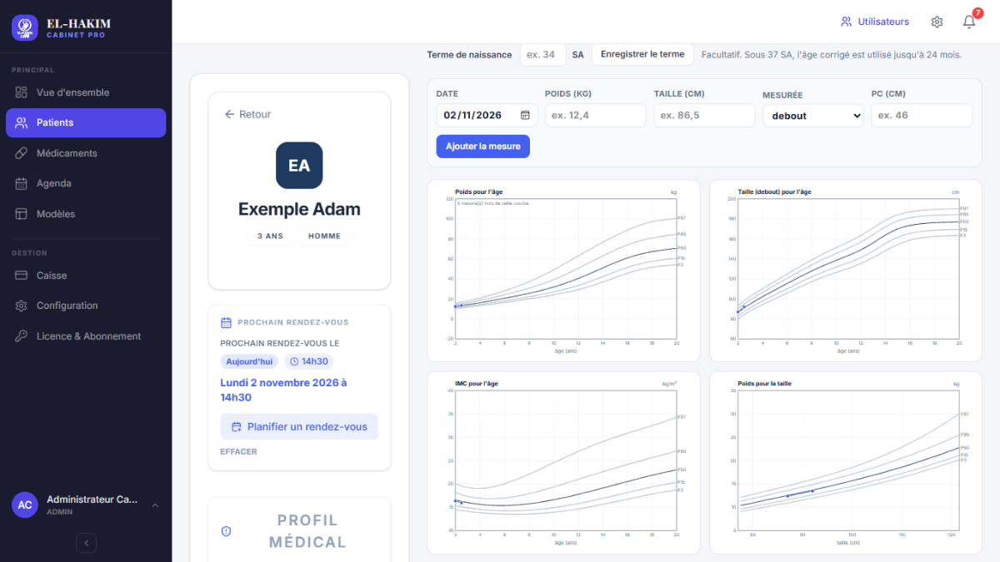
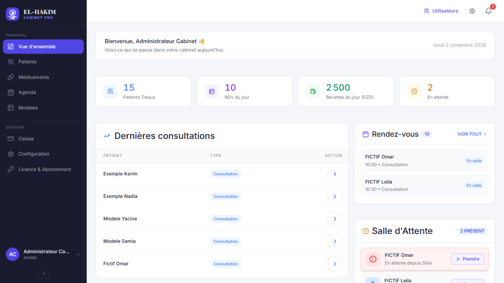
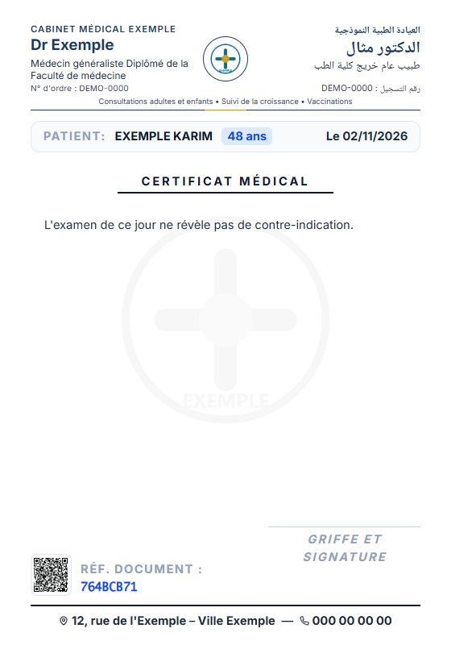
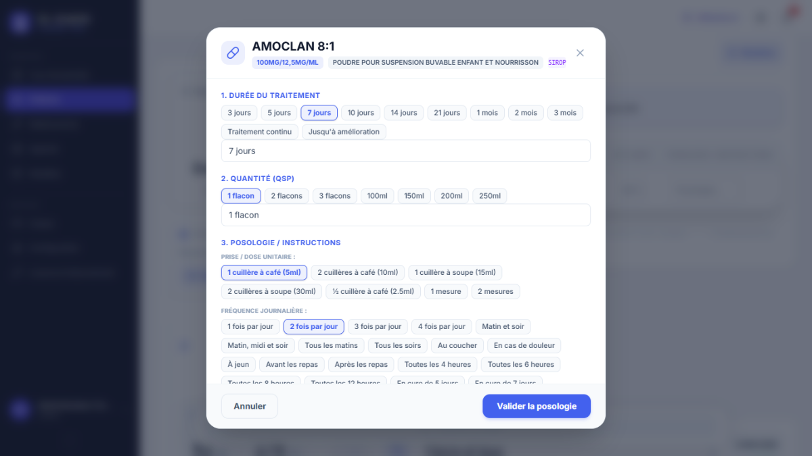
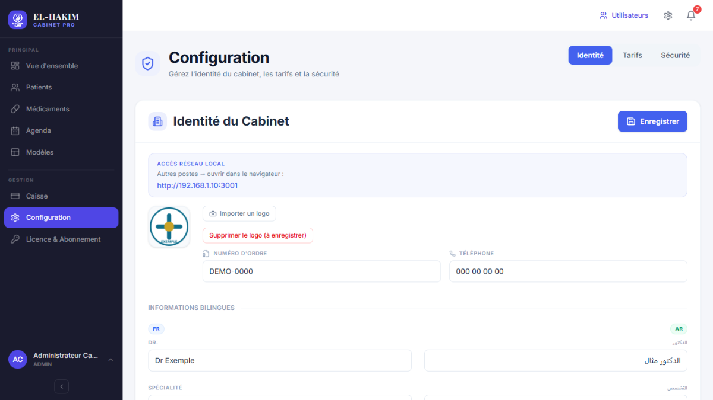
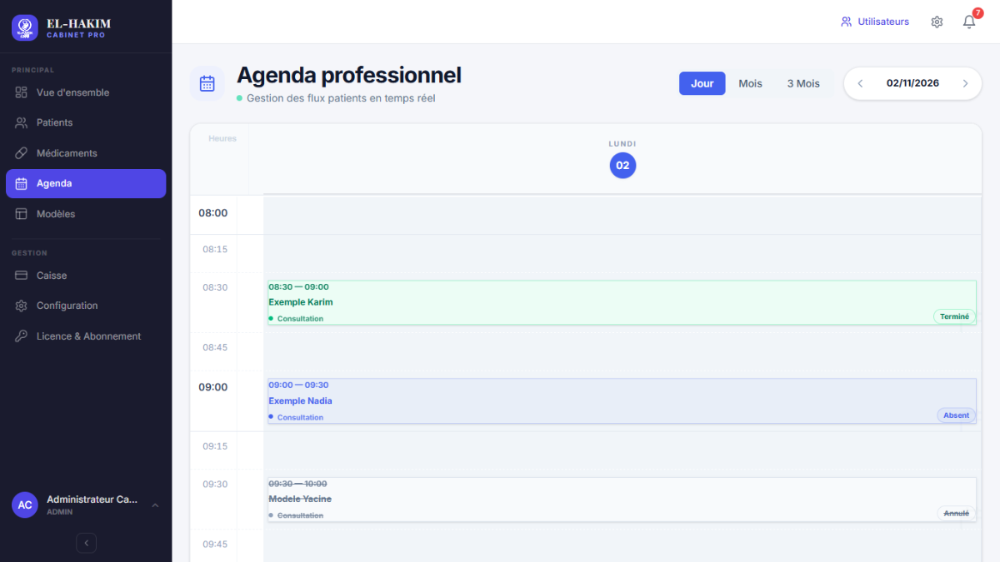

Pédiatrie
Les courbes de croissance, prêtes à imprimer
Poids, taille, IMC et périmètre crânien sur les références CDC 2000, percentiles et Z-scores, âge corrigé pour les prématurés. Les courbes s'impriment en A4.

Agenda, salle d'attente, consultations, ordonnances, certificats et lettres d'orientation en français et en arabe, caisse. Sur un poste ou en réseau — et sans dépendre d'Internet.


Le cahier de rendez-vous déborde et se relit mal.
Agenda du jour, du mois ou de 3 mois ; arrivée, absence ou annulation en un clic.
Des allers-retours entre le bureau et la salle d'attente.
Le médecin voit la file d'attente en temps réel et appelle le patient suivant depuis son poste.
Ordonnances et certificats réécrits à la main, encore et encore.
Nomenclature des médicaments, posologie guidée, modèles réutilisables, impression A5 avec votre en-tête français–arabe.
Une connexion Internet qui coupe au mauvais moment.
Tout fonctionne sur les ordinateurs du cabinet ; Internet ne sert qu'aux mises à jour.
Des courbes de croissance tracées à la main.
Poids, taille, IMC et périmètre crânien placés sur les courbes CDC 2000, avec percentiles et Z-scores.
Une caisse tenue sur un cahier.
Recettes, dépenses, dettes et traitements en plusieurs séances, avec un journal de caisse A4.
Captures réelles du logiciel, avec des données de démonstration.
Poids, taille, IMC et périmètre crânien sur les références CDC 2000, percentiles et Z-scores, âge corrigé pour les prématurés. Les courbes s'impriment en A4.

Recherche dans la nomenclature, durée, quantité et posologie à choisir. Ordonnances, certificats, arrêts de travail, bilans, imagerie, comptes rendus, lettres d'orientation : tous avec votre en-tête bilingue et votre logo, en A5 ou A4.

Les données restent au cabinet, sur le poste unique ou sur le poste serveur. Le secrétariat et les autres bureaux travaillent par le réseau local, sans Internet.

La secrétaire enregistre l'arrivée du patient ; le médecin le voit aussitôt dans la file et l'appelle. Rappels des rendez-vous à l'écran.

La vidéo ne se charge qu'au clic : rien n'est envoyé à YouTube avant.
Installez-le sur l'ordinateur du cabinet : la période d'essai démarre aussitôt, sans engagement.